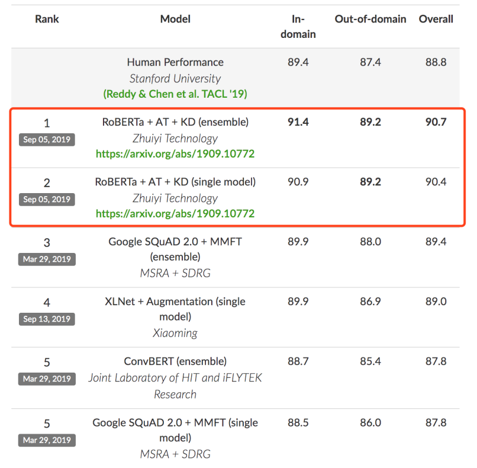
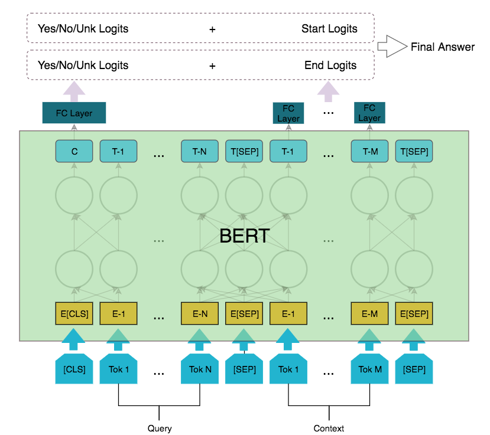
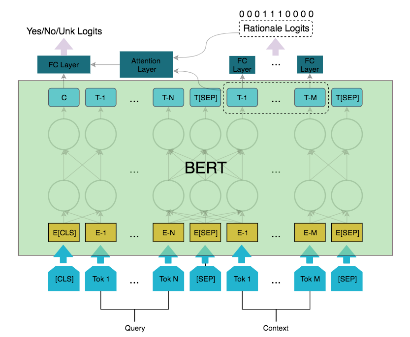
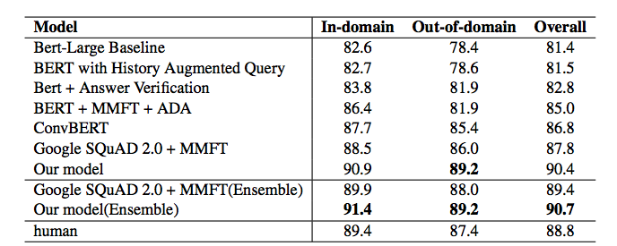
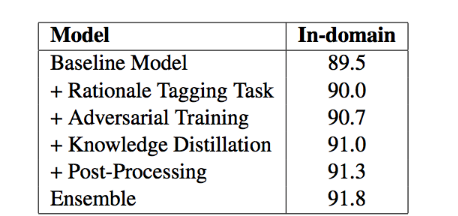

本文首发于机器之心微信公众号，专栏留存。
近日，在由斯坦福大学发起的对话式问答挑战赛 CoQA (Conversational Question Answering Challenge）中，追一科技AI Lab团队超越微软团队成为榜单第一[1]，刷新了之前微软等团队创造的CoQA纪录。值得注意的是，团队提交的技术方案中，单模型的各项指标表现首次全面超越人类。

一直以来，机器阅读理解都是自然语言处理界最受关注、进步最快的技术方向之一，主要有两大比赛较受瞩目，分别是注重一问一答的SQuAD[2]和多轮对话问答的CoQA[3]。相比于SQuAD，CoQA更注重模型在对话过程中回答关联问题的能力，答案形式自由，而且数据来自儿童故事、文学、初高中英语考试、新闻、维基百科、Reddit和科学等七个不同的领域，这些改进都极大地提高了挑战赛的难度，对模型的鲁棒性和泛化能力有着更高的要求。我们团队针对CoQA数据集的难点，通过对抗训练（Adversarial training）和知识蒸馏（Knowledge Distillation）等方法，有效地提高了模型的泛化能力，从而依靠单模型刷新了CoQA榜单的记录，并首次单模型超越人工评测指标。在这里分别从模型、训练方法、后处理等方面做一个简单的介绍。
模型
Baseline：RoBERTa
我们的基线模型以Facebook开源的RoBERTa[4]预训练模型为基础，之所以选择RoBERTa，是因为其相较于BERT[5]在语言模型预训练的过程中用了更多领域的语料，更适合CoQA数据来自不同领域的特点。
在输入端，由于CoQA的数据集是对话式的，每个问题都依赖于历史对话，因此在训练过程中，我们将对话历史拼接到当前问题之前，问题和答案之间用分隔符分开，组成当前轮次的Query，然后将其与Context拼接，作为模型的输入。
在输出端，CoQA数据集的答案有可能是自由文本、Yes、No和Unk。由于头部的自由文本的答案都能在Context中找到相近的片段，我们采取抽取+Yes/No/Unk分类的输出层结构。其中，对于抽取的部分，我们使用Pointer-Network的输出结构得到答案开始和结尾位置的logits；对于分类的部分，则用一个简单的全连接层得到Yes/No/Unk三分类的logits。

在计算损失函数时，我们将预测答案开始和结尾位置的两个logits向量分别与Yes/No/Unk三分类的logits拼接，得到两个最终的logits向量，此时这两个logits对应的label依然是one-hot的，所以我们可以把这两个logits向量过softmax，然后用交叉熵计算开始和结尾的损失，取平均，得到基线模型的损失值。
依据标注辅助任务
在CoQA数据集中，每一个回答（除了unknown）都附带了一段Context中的原文片段作为逻辑依据。为了充分利用该信息，我们在Baseline模型的基础上，增加了一个依据标注的任务，同步进行多任务训练。对于Context的每一个token，我们会判断其是否在逻辑依据中（标成1或者0）。这部分的损失函数用二元交叉熵计算，按照一定比例累加到总的loss上。

除此之外，我们发现，Yes/No类型答案的逻辑依据中，常常包含了肯定或否定的语义，可以用来辅助Yes/No/Unk的分类，所以我们在RoBERTa池化输出的基础上又利用注意力机制融合了逻辑依据的输出信息，以提高最后模型的表现。
训练方法
除了模型上的修改，为了提高模型的泛化能力以应付CoQA数据集来源丰富、问题类型多样的特点，我们还采用了对抗训练和知识蒸馏等训练方法。
对抗训练
对抗训练[6]是一种能有效提高模型鲁棒性和泛化能力的训练手段，其基本原理是通过在原始输入上增加对抗扰动，得到对抗样本，再利用对抗样本进行训练，从而提高模型的表现。由于CoQA数据集对模型的泛化能力较高，我们在训练时，使用了对抗训练来提高模型的表现。
由于自然语言文本是离散的，一般会把对抗扰动添加到嵌入层上。在我们的系统中，为了最大化对抗样本的扰动能力，我们利用梯度上升的方式生成对抗样本。为了避免扰动过大，我们将梯度做了归一化处理。
其中，v为嵌入向量。实际训练过程中，我们在训练完一个batch的原始输入数据时，保存当前batch对输入词向量的梯度，得到对抗样本后，再使用对抗样本进行对抗训练。
除了对抗训练，我们还利用虚拟对抗训练做半监督训练。
知识蒸馏
与对抗训练类似，知识蒸馏也是一种常用的提高模型泛化能力的训练方法。
知识蒸馏[7] 这个概念最早由Hinton在2015年提出。一开始，知识蒸馏通往往应用在模型压缩方面，利用训练好的复杂模型（teacher model）输出作为监督信号去训练另一个简单模型（student model），从而将teacher学习到的知识迁移到student。Tommaso [8]在18年提出，如果student和teacher的模型完全相同，蒸馏后则会对模型的表现有一定程度上的提升。
在我们的训练过程中，我们先用RoBERTa + 对抗训练得到teacher model，再用知识蒸馏的方法得到student模型。训练student时，我们同时采用真实label和teacher的输出来计算损失。
后处理
在CoQA数据集中，有一小部分的问题是多选题，比如问题是“How Jack goes to school? Walk or ride? ”，而Context中的片段是“walked”。即使模型抽取到了“walked”，也并不能得分。因此，针对这类问题，我们做了一个简单的后处理。通过一定规则识别到多选题型的问题，然后抽取出问题中出现的选项，找到与我们模型抽取的Context片段语义相似度最高的选项，作为我们系统最终的回答。
结果分析与消融实验
最终，我们的单模型在CoQA Leaderboard上超越了微软团队2.6个百分点，并首次超过了人工评测的水平。值得一提的是，与微软和其他团队不同，我们在模型训练的过程，没有用任何CoQA以外的有监督的数据集，进行多任务训练或是数据增强。

为了验证各个技巧的作用，我们进行了消融实验。从实验结果中可以看出，依据标记和对抗训练带来的提升较大，知识蒸馏和后处理也能带来一定程度的提升。

最终可以看到，利用对抗训练、知识蒸馏等方法，我们的单模型在RoBERTa Baseline的基础上提升了1.8个百分点。
总结
这次的CoQA挑战赛经历，是我们团队站在巨人肩膀上的一次眺望。在优化模型的过程中，我们发现由于预训练模型已经相当强大，以往一些屡试不爽的优化技巧在RoBERTa上却并不能奏效。这就需要我们在比赛的过程中，大胆地设想，仔细地实验，验证不同方法的有效性和稳定性，从而找到真正行之有效的解决方案。希望我们的这次分享也能给其他团队带来一些经验上的启发。
对方案细节感兴趣的同学可以看英文报告：https://arxiv.org/abs/1909.10772
Reference:
[1] CoQA Leaderboard. https://stanfordnlp.github.io/coqa/
[2] SQuAD: 100,000+ Questions for Machine Comprehension of Text. https://arxiv.org/abs/1606.05250
[3] CoQA: A Conversational Question Answering Challenge. https://arxiv.org/abs/1808.07042
[4] RoBERTa: A Robustly Optimized BERT Pretraining Approach. https://arxiv.org/abs/1907.11692
[5] BERT: Pre-training of Deep Bidirectional Transformers for Language Understanding. https://arxiv.org/abs/1810.04805
[6] Adversarial Training Methods for Semi-Supervised Text Classification. https://arxiv.org/abs/1605.07725
[7] Distilling the Knowledge in a Neural Network. https://arxiv.org/abs/1503.02531
[8] Born Again Neural Networks. https://arxiv.org/abs/1805.04770